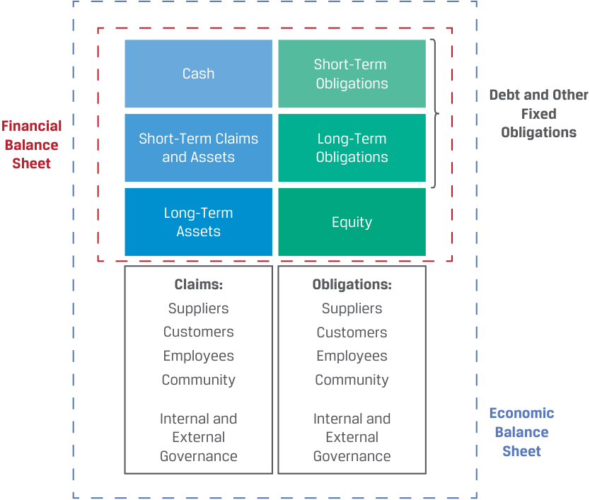
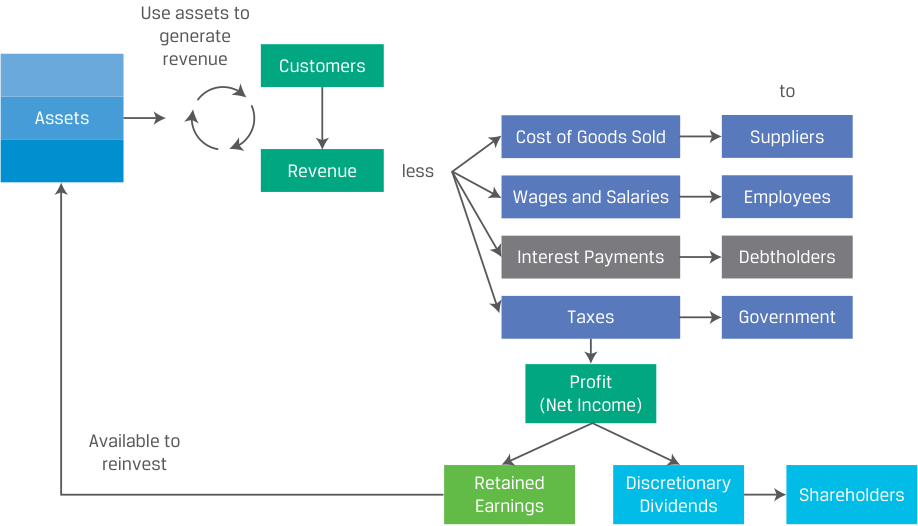
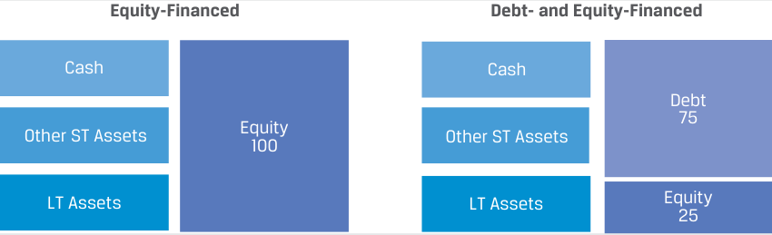
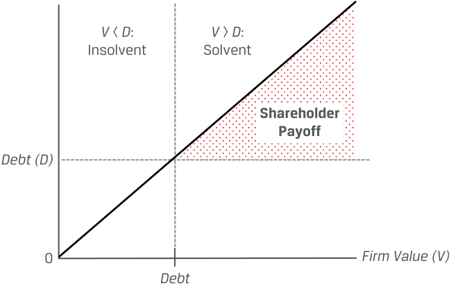
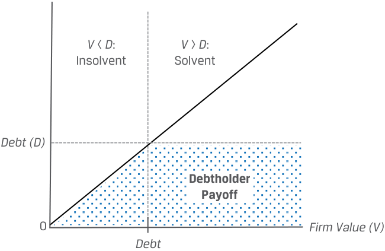

Learning Module 2 Investors and Other Stakeholders - Part 1: Introduction
Volume 3: Corporate Issuers
Learning Module 2 Investors and Other Stakeholders
Part 1/3: Introduction (PDF Pages 45–55)
Tập 3: Tổ chức phát hành doanh nghiệp (Corporate Issuers)
Học phần 2: Nhà đầu tư và các bên liên quan khác (Investors and Other Stakeholders)
Phần 1/3: Giới thiệu (Introduction) (Trang PDF 45–55)
L E A R N I N G M O D U L E
H Ọ C P H Ầ N (L E A R N I N G M O D U L E)
2
2
Investors and Other Stakeholders
Nhà đầu tư và các bên liên quan khác (Investors and Other Stakeholders)
LEARNING OUTCOMES
MỤC TIÊU HỌC TẬP (LEARNING OUTCOMES)
Mastery The candidate should be able to: compare the financial claims and motivations of lenders and shareholders describe a company’s stakeholder groups and compare their interests describe environmental, social, and governance factors of corporate issuers considered by investors
Thành thạo – Ứng viên cần có khả năng: - So sánh quyền đòi hỏi tài chính (financial claims) và động lực của bên cho vay (lenders) và cổ đông (shareholders) - Mô tả các nhóm bên liên quan (stakeholder groups) của một công ty và so sánh lợi ích của họ - Mô tả các yếu tố môi trường, xã hội và quản trị (environmental, social, and governance – ESG) của các tổ chức phát hành doanh nghiệp được các nhà đầu tư xem xét
INTRODUCTION
GIỚI THIỆU (INTRODUCTION)
1
1
Corporate issuers are financed with debt and equity. Debt and equity securities have different risk and return profiles for both issuers and investors. This learning module discusses these differences and their implications, while also considering the perspectives of a broader group of stakeholders beyond debtholders and shareholders. We introduce these groups and discuss potential conflicts of interest among them. Balancing stakeholder interests is important, as both issuers and investors have increasingly incorporated environmental, social, and governance factors into their decision-making processes. Analysts assess ESG factors to better evaluate issuers’ expected future performance and risk profile.
Các tổ chức phát hành doanh nghiệp (corporate issuers) được tài trợ bằng nợ (debt) và vốn chủ sở hữu (equity). Chứng khoán nợ và chứng khoán vốn chủ sở hữu có hồ sơ rủi ro và tỷ suất sinh lợi (risk and return profiles) khác nhau đối với cả tổ chức phát hành lẫn nhà đầu tư. Học phần này thảo luận về những điểm khác biệt đó và các hàm ý của chúng, đồng thời xem xét góc nhìn của một nhóm rộng hơn các bên liên quan (stakeholders) ngoài các chủ nợ (debtholders) và cổ đông (shareholders). Chúng ta sẽ giới thiệu các nhóm này và thảo luận về những xung đột lợi ích tiềm tàng giữa họ. Việc cân bằng lợi ích của các bên liên quan là rất quan trọng, bởi cả tổ chức phát hành và nhà đầu tư ngày càng tích hợp các yếu tố môi trường, xã hội và quản trị (environmental, social, and governance – ESG) vào quy trình ra quyết định của mình. Các chuyên gia phân tích đánh giá các yếu tố ESG để nhận định tốt hơn về kết quả hoạt động kỳ vọng trong tương lai và hồ sơ rủi ro của các tổ chức phát hành.
LEARNING MODULE OVERVIEW
TỔNG QUAN HỌC PHẦN (LEARNING MODULE OVERVIEW)
-
Corporate issuers are financed with debt and equity. Debt is a financing source with a finite length, and interest and principal payments are promised on pre-specified future dates. Debtholders have a priority claim over shareholders to an issuer’s cash flows and assets.
-
Equity is a source of permanent financing, and no promises of repayments or distributions to shareholders are made. Equity is a residual claim on an issuer’s cash flows and assets.
-
Các tổ chức phát hành doanh nghiệp được tài trợ bằng nợ và vốn chủ sở hữu. Nợ (debt) là một nguồn tài trợ có thời hạn hữu hạn (finite length), và các khoản thanh toán tiền lãi cũng như nợ gốc được cam kết chi trả vào những ngày xác định trước trong tương lai. Chủ nợ (debtholders) có quyền đòi hỏi ưu tiên (priority claim) cao hơn cổ đông đối với dòng tiền và tài sản của tổ chức phát hành.
-
Vốn chủ sở hữu (equity) là một nguồn tài trợ vĩnh viễn (permanent financing), và không có bất kỳ lời hứa hoàn trả vốn hay phân phối lợi nhuận nào được đưa ra cho các cổ đông. Vốn chủ sở hữu là quyền hưởng phần còn lại (residual claim) đối với dòng tiền và tài sản của tổ chức phát hành.
-
From the perspective of an issuer, debt is riskier than equity. From the perspective of an investor, equity is riskier than debt. The proportion of debt in a firm’s capital structure affects both the potential return and the risk of cash flows.
-
Conflicts of interest may exist between debtholders and shareholders. Debtholders’ payoff is limited to promised interest and principal payments, while shareholders’ payoff is theoretically unlimited as increases in firm value over the value of debt accrue to shareholders.
-
Besides debt and equity investors, corporate stakeholders include the board of directors, managers, employees, customers, suppliers, governments, society in general, and the environment. The stakeholder theory of corporate governance broadens the focus of corporate decision-making beyond that of the shareholder theory.
-
Environmental, social, and governance (ESG) considerations are becoming more important to both investors and analysts. ESG factors affect firms’ values and can present both risks and opportunities.
-
Dưới góc độ của một tổ chức phát hành, nợ có rủi ro cao hơn vốn chủ sở hữu. Dưới góc độ của một nhà đầu tư, vốn chủ sở hữu có rủi ro cao hơn nợ. Tỷ trọng nợ trong cấu trúc vốn (capital structure) của doanh nghiệp ảnh hưởng đến cả tỷ suất sinh lợi tiềm năng lẫn rủi ro của các dòng tiền.
-
Xung đột lợi ích (conflicts of interest) có thể tồn tại giữa chủ nợ và cổ đông. Khoản thu về (payoff) của chủ nợ bị giới hạn ở các khoản thanh toán tiền lãi và nợ gốc đã cam kết, trong khi khoản thu về của cổ đông về mặt lý thuyết là không giới hạn bởi vì sự gia tăng giá trị doanh nghiệp vượt trên giá trị khoản nợ sẽ thuộc về các cổ đông.
-
Bên cạnh các nhà đầu tư nợ và vốn chủ sở hữu, các bên liên quan của doanh nghiệp (corporate stakeholders) còn bao gồm hội đồng quản trị, các nhà quản lý, nhân viên, khách hàng, nhà cung cấp, chính phủ, xã hội nói chung và môi trường. Lý thuyết các bên liên quan trong quản trị công ty (stakeholder theory of corporate governance) mở rộng trọng tâm của việc ra quyết định trong doanh nghiệp ra ngoài phạm vi của lý thuyết cổ đông (shareholder theory).
-
Các cân nhắc về môi trường, xã hội và quản trị (ESG) đang ngày càng trở nên quan trọng hơn đối với cả các nhà đầu tư và các chuyên gia phân tích. Các yếu tố ESG ảnh hưởng đến giá trị của doanh nghiệp và có thể mang lại cả rủi ro lẫn cơ hội.
LEARNING MODULE SELF-ASSESSMENT
TỰ ĐÁNH GIÁ HỌC PHẦN (LEARNING MODULE SELF-ASSESSMENT)
These initial questions are intended to help you gauge your current level of understanding of this learning module.
Các câu hỏi ban đầu này nhằm giúp bạn tự đánh giá mức độ hiểu biết hiện tại của mình về học phần này.
Complete each statement by selecting the most appropriate term in parentheses.
Hoàn thành mỗi câu phát biểu bằng cách chọn thuật ngữ thích hợp nhất trong ngoặc đơn.
- ______ make permanent capital available to issuers. (debtholders, shareholders)
- ______ cung cấp nguồn vốn vĩnh viễn (permanent capital) cho các tổ chức phát hành. (chủ nợ – debtholders, cổ đông – shareholders)
Solution:
Lời giải:
Shareholders make permanent capital available to issuers.
Cổ đông (Shareholders) cung cấp nguồn vốn vĩnh viễn cho các tổ chức phát hành.
- Debtholders is incorrect. Debt has a finite maturity, though it can be far in the future.
- ______ have a residual claim against a firm’s cash flows. (debtholders, shareholders)
- Chủ nợ (Debtholders) là sai. Nợ có kỳ hạn đáo hạn hữu hạn, mặc dù thời điểm đáo hạn đó có thể ở rất xa trong tương lai.
- ______ có quyền hưởng phần còn lại (residual claim) đối với dòng tiền của doanh nghiệp. (chủ nợ – debtholders, cổ đông – shareholders)
Solution:
Lời giải:
Shareholders have a residual claim against a firm’s cash flows. Debtholders is incorrect. Debtholders have a priority claim over shareholders to a firm’s cash flows and assets.
Cổ đông (Shareholders) có quyền hưởng phần còn lại đối với dòng tiền của doanh nghiệp. Chủ nợ (Debtholders) là sai. Chủ nợ có quyền đòi hỏi ưu tiên (priority claim) cao hơn cổ đông đối với dòng tiền và tài sản của doanh nghiệp.
- The shareholder theory of corporate governance is ___ than the stakeholder theory. (narrower, broader)
- Lý thuyết cổ đông (shareholder theory) trong quản trị công ty ___ hơn so với lý thuyết các bên liên quan (stakeholder theory). (hẹp – narrower, rộng – broader)
Solution:
Lời giải:
The shareholder theory of corporate governance is narrower than the stakeholder theory.
Lý thuyết cổ đông trong quản trị công ty hẹp (narrower) hơn so với lý thuyết các bên liên quan.
Stakeholders are groups and individuals with a vested interest in a firm’s success and include, but are not limited to, shareholders.
Các bên liên quan (stakeholders) là các nhóm và cá nhân có lợi ích gắn liền với sự thành công của doanh nghiệp và bao gồm, nhưng không giới hạn ở, các cổ đông.
| 4. ESG considerations are an explicit objective in the _______ theory of corporate governance. (shareholder, stakeholder) Solution: |
|---|
| ESG considerations are an explicit objective in thestakeholdertheory of corporate governance. |
| The stakeholder theory seeks to balance the interests of shareholders with the interests of a broader group that relate to ESG considerations. |
| 5. The estimated impact of ESG factors on corporate issuers’ financial and share price performance has _____ over time. (decreased, remained the same, increased) Solution: |
| The estimated impact of ESG factors on corporate issuers’ financial and share price performance hasincreasedover time. This impact is the result of changing consumer and investor preferences, increased regulations and taxes related to ESG factors, and the rising threat of climate change. |
| 6. ESG factors are increasingly recognized as ___ by analysts. (quantifiable, qualitative) Solution: ESG factors are increasingly recognized asquantifiableby analysts. His- torically, ESG factors were considered negative externalities with no direct effect on firms’ financial statements. Increasingly, analysts are quantifying the effects of ESG factors and including them in firm valuation and invest- ment decision-making. |
- Các cân nhắc về ESG là một mục tiêu rõ ràng trong lý thuyết _______ về quản trị công ty. (cổ đông – shareholder, các bên liên quan – stakeholder)
Lời giải:
FINANCIAL CLAIMS OF LENDERS AND SHAREHOLDERS
Các cân nhắc về ESG là một mục tiêu rõ ràng trong lý thuyết các bên liên quan (stakeholder) về quản trị công ty.
Lý thuyết các bên liên quan tìm cách cân bằng lợi ích của các cổ đông với lợi ích của một nhóm rộng lớn hơn có liên quan đến các khía cạnh ESG.
2
- Tác động ước tính của các yếu tố ESG lên kết quả hoạt động tài chính và diễn biến giá cổ phiếu của các tổ chức phát hành doanh nghiệp đã _____ theo thời gian. (giảm xuống – decreased, giữ nguyên – remained the same, tăng lên – increased)
Lời giải:
compare the financial claims and motivations of lenders and shareholders
Tác động ước tính của các yếu tố ESG lên kết quả hoạt động tài chính và diễn biến giá cổ phiếu của các tổ chức phát hành doanh nghiệp đã tăng lên (increased) theo thời gian. Tác động này là kết quả của sự thay đổi trong thị hiếu của người tiêu dùng và nhà đầu tư, sự gia tăng các quy định pháp lý và thuế liên quan đến các yếu tố ESG, và mối đe dọa ngày càng tăng của biến đổi khí hậu.
- Các yếu tố ESG ngày càng được các chuyên gia phân tích nhìn nhận là ___. (có thể định lượng được – quantifiable, mang tính định tính – qualitative)
Debt Versus Equity
Lời giải:
Các yếu tố ESG ngày càng được các chuyên gia phân tích nhìn nhận là có thể định lượng được (quantifiable). Trong lịch sử, các yếu tố ESG từng được coi là các ngoại ứng tiêu cực (negative externalities) không có tác động trực tiếp lên báo cáo tài chính của doanh nghiệp. Ngày càng nhiều chuyên gia phân tích đang định lượng hóa tác động của các yếu tố ESG và đưa chúng vào mô hình định giá doanh nghiệp cũng như quy trình ra quyết định đầu tư.
QUYỀN ĐÒI HỎI TÀI CHÍNH CỦA BÊN CHO VAY VÀ CỔ ĐÔNG (FINANCIAL CLAIMS OF LENDERS AND SHAREHOLDERS)
The prior module established that corporations finance their assets with debt and equity. We now turn our attention to the nature of these claims, their relative risk versus return for both issuers and investors, and potential conflicts of interest that may arise between lenders and shareholders.
2
- So sánh quyền đòi hỏi tài chính và động lực của bên cho vay và cổ đông (compare the financial claims and motivations of lenders and shareholders)
Debt and Equity Claims
Nợ so với Vốn chủ sở hữu (Debt Versus Equity)
Học phần trước đã xác lập rằng các công ty cổ phần tài trợ cho tài sản của mình bằng nợ và vốn chủ sở hữu. Bây giờ chúng ta chuyển sự chú ý sang bản chất của các quyền đòi hỏi (claims) này, mối tương quan giữa rủi ro và tỷ suất sinh lợi của chúng đối với cả tổ chức phát hành và nhà đầu tư, cũng như các xung đột lợi ích tiềm tàng có thể phát sinh giữa bên cho vay và cổ đông.
Exhibit 1 shows the relationship between a corporation’s assets and the claims of its debt and equity investors that finance them. Exhibit 2 shows that assets are used to generate income to pay interest to debtholders, while remaining profits are either reinvested or distributed to shareholders.
Quyền đòi hỏi của Nợ và Vốn chủ sở hữu (Debt and Equity Claims)
Bảng 1 (Exhibit 1) thể hiện mối quan hệ giữa tài sản của một công ty cổ phần và quyền đòi hỏi của các nhà đầu tư nợ và vốn chủ sở hữu đã tài trợ cho các tài sản đó. Bảng 2 (Exhibit 2) cho thấy tài sản được sử dụng để tạo ra thu nhập nhằm trả lãi cho các chủ nợ, trong khi phần lợi nhuận còn lại được tái đầu tư hoặc phân phối cho các cổ đông.
Exhibit 1: Balance Sheet: Assets, Debt, and Equity
Bảng 1 (Exhibit 1): Bảng cân đối kế toán: Tài sản, Nợ và Vốn chủ sở hữu (Balance Sheet: Assets, Debt, and Equity)

Chú thích hình ảnh: Bảng cân đối kế toán Tài chính (Financial Balance Sheet) và Bảng cân đối kế toán Kinh tế (Economic Balance Sheet) minh họa mối liên hệ giữa Tài sản (Tiền mặt, Tài sản ngắn hạn, Tài sản dài hạn, cùng các quyền lợi từ Nhà cung cấp, Khách hàng, Nhân viên, Cộng đồng) và Nguồn vốn/Nghĩa vụ (Nghĩa vụ ngắn hạn, Nợ và các nghĩa vụ cố định dài hạn khác, Vốn chủ sở hữu, cùng các nghĩa vụ với các bên liên quan).
Exhibit 2: Payments to Debt and Equity Investors
Bảng 2 (Exhibit 2): Các khoản thanh toán cho Nhà đầu tư Nợ và Vốn chủ sở hữu (Payments to Debt and Equity Investors)

Chú thích hình ảnh: Tài sản (Assets) được sử dụng để tạo ra doanh thu từ Khách hàng (Customers). Doanh thu (Revenue) trừ đi Giá vốn hàng bán trả cho Nhà cung cấp (Cost of Goods Sold – Suppliers), Tiền lương và tiền công trả cho Nhân viên (Wages and Salaries – Employees), Chi phí lãi vay trả cho Chủ nợ (Interest Payments – Debtholders), và Thuế nộp cho Chính phủ (Taxes – Government) sẽ còn lại Lợi nhuận / Thu nhập ròng (Profit / Net Income). Khoản lợi nhuận này có thể được giữ lại để tái đầu tư (Retained Earnings) hoặc chi trả Cổ tức tùy ý (Discretionary Dividends) cho các Cổ đông (Shareholders).
Debtholders, or lenders, provide capital with a finite maturity. Issuers agree to make promised interest payments and to repay principal on pre-specified dates. Lenders have no decision-making power within the corporation, but debt contracts can be structured to protect lenders by imposing financial requirements and/or legal claims on certain assets of the corporation if the debt is not repaid as agreed. As shown in Exhibit 2, interest payments are paid before any distributions to equity investors and are a priority claim against a company’s assets and cash flows.
Chủ nợ (debtholders), hay bên cho vay (lenders), cung cấp nguồn vốn có kỳ hạn đáo hạn hữu hạn (finite maturity). Các tổ chức phát hành đồng ý thực hiện các khoản thanh toán tiền lãi đã cam kết và hoàn trả nợ gốc vào những ngày đã được xác định trước. Bên cho vay không có quyền ra quyết định trong nội bộ công ty cổ phần, nhưng các hợp đồng nợ có thể được cấu trúc để bảo vệ bên cho vay bằng cách áp đặt các yêu cầu tài chính và/hoặc quyền đòi hỏi pháp lý đối với một số tài sản nhất định của công ty cổ phần nếu khoản nợ không được hoàn trả theo đúng thỏa thuận. Như được thể hiện trong Bảng 2, các khoản thanh toán tiền lãi được chi trả trước bất kỳ khoản phân phối nào cho các nhà đầu tư vốn chủ sở hữu và là một quyền đòi hỏi ưu tiên (priority claim) đối với tài sản và dòng tiền của công ty.
Equity investors make permanent capital available to issuers; issuers generally do not commit to future dividends or repayments to shareholders. Rather, equity is a residual claim against company cash flows—whatever is left after expenses, investments, and debt payments. Cash distributions to equity investors are at the discretion of the board of directors. In contrast to lenders, equity investors have voting rights on important company matters such as choosing the board of directors, which appoints and oversees management.
Các nhà đầu tư vốn chủ sở hữu cung cấp nguồn vốn vĩnh viễn (permanent capital) cho các tổ chức phát hành; các tổ chức phát hành nhìn chung không cam kết về cổ tức trong tương lai hoặc hoàn trả vốn cho cổ đông. Thay vào đó, vốn chủ sở hữu là một quyền hưởng phần còn lại (residual claim) đối với dòng tiền của công ty — bất cứ thứ gì còn sót lại sau khi đã trừ đi các chi phí hoạt động, các khoản đầu tư và các khoản thanh toán nợ. Việc phân phối tiền mặt cho các nhà đầu tư vốn chủ sở hữu hoàn toàn tùy thuộc vào quyết định (at the discretion) của hội đồng quản trị. Trái ngược với bên cho vay, các nhà đầu tư vốn chủ sở hữu có quyền biểu quyết (voting rights) đối với các vấn đề quan trọng của công ty chẳng hạn như bầu chọn hội đồng quản trị – cơ quan sẽ bổ nhiệm và giám sát ban giám đốc.
In addition to interest payments to debtholders, other claims that must be satisfied before any shareholder distributions are made include payments to suppliers, employees, and governments (in the form of taxes). If a firm is dissolved and its assets are liquidated, these priority claims must be met before equity investors receive anything.
Ngoài các khoản thanh toán tiền lãi cho chủ nợ, các quyền đòi hỏi khác phải được đáp ứng trước khi thực hiện bất kỳ khoản phân phối nào cho cổ đông bao gồm các khoản thanh toán cho nhà cung cấp, nhân viên và chính phủ (dưới hình thức thuế). Nếu một doanh nghiệp bị giải thể và tài sản của nó bị thanh lý (liquidated), các quyền đòi hỏi ưu tiên này phải được đáp ứng trước khi các nhà đầu tư vốn chủ sở hữu nhận được bất kỳ khoản nào.
Because debt is a priority, fixed, and finite claim on assets and cash flows, it is a less costly form of financing for issuers: it is lower risk for investors than equity (though, as will be discussed, increasing debt increases risk for a company’s equity investors). Another difference between debt and equity is that debtholder interest payments are usually treated as a tax-deductible expense, reducing taxable income, while dividends paid to shareholders are not.
Bởi vì nợ là một quyền đòi hỏi ưu tiên, cố định và có thời hạn hữu hạn đối với tài sản và dòng tiền, nên nó là một hình thức tài trợ ít tốn kém hơn đối với các tổ chức phát hành: nó có rủi ro thấp hơn đối với các nhà đầu tư so với vốn chủ sở hữu (mặc dù, như sẽ được thảo luận, việc gia tăng nợ sẽ làm tăng rủi ro cho các nhà đầu tư vốn chủ sở hữu của công ty). Một điểm khác biệt nữa giữa nợ và vốn chủ sở hữu là các khoản thanh toán tiền lãi cho chủ nợ thường được coi là một khoản chi phí được khấu trừ thuế (tax-deductible expense), giúp làm giảm thu nhập chịu thuế, trong khi cổ tức trả cho cổ đông thì không được khấu trừ thuế.
KNOWLEDGE CHECK
KIỂM TRA KIẾN THỨC (KNOWLEDGE CHECK)
- Identify whether the attribute on the left is a feature of debt or equity.
- Xác định xem thuộc tính ở bên trái là đặc điểm của Nợ (Debt) hay Vốn chủ sở hữu (Equity).
| Legal repayment obligation | Debt, Equity |
|---|---|
| Residual asset claim | Debt, Equity |
| Discretionary payments | Debt, Equity |
| Tax-deductible expense | Debt, Equity |
| Finite term | Debt, Equity |
| Voting rights | Debt, Equity |
| Thuộc tính | Lựa chọn |
|---|---|
| Nghĩa vụ hoàn trả pháp lý (Legal repayment obligation) | Nợ (Debt), Vốn chủ sở hữu (Equity) |
| Quyền hưởng tài sản còn lại (Residual asset claim) | Nợ (Debt), Vốn chủ sở hữu (Equity) |
| Các khoản thanh toán tùy ý (Discretionary payments) | Nợ (Debt), Vốn chủ sở hữu (Equity) |
| Chi phí được khấu trừ thuế (Tax-deductible expense) | Nợ (Debt), Vốn chủ sở hữu (Equity) |
| Thời hạn hữu hạn (Finite term) | Nợ (Debt), Vốn chủ sở hữu (Equity) |
| Quyền biểu quyết (Voting rights) | Nợ (Debt), Vốn chủ sở hữu (Equity) |
Solution:
Lời giải:
| Legal repayment obligation | Debt |
|---|---|
| Residual asset claim | Equity |
| Discretionary payments | Equity |
| Tax-deductible expense | Debt |
| Finite term | Debt |
| Voting rights | Equity |
| Thuộc tính | Đáp án |
|---|---|
| Nghĩa vụ hoàn trả pháp lý (Legal repayment obligation) | Nợ (Debt) |
| Quyền hưởng tài sản còn lại (Residual asset claim) | Vốn chủ sở hữu (Equity) |
| Các khoản thanh toán tùy ý (Discretionary payments) | Vốn chủ sở hữu (Equity) |
| Chi phí được khấu trừ thuế (Tax-deductible expense) | Nợ (Debt) |
| Thời hạn hữu hạn (Finite term) | Nợ (Debt) |
| Quyền biểu quyết (Voting rights) | Vốn chủ sở hữu (Equity) |
Whether offered in the form of a loan or a bond, debt involves a contractual obligation with priority interest and principal claims. Equity investors receive discretionary distributions and have a residual claim to assets. Equity dividend payments are not tax deductible. Debt requires contractual interest and principal payments, with interest expense being tax deductible for the issuer. Debt has a finite term and confers no decision-making power, while equity has an unlimited term and includes voting rights.
Cho dù được cung cấp dưới hình thức một khoản vay hay một trái phiếu, nợ luôn bao gồm một nghĩa vụ theo hợp đồng với các quyền đòi hỏi ưu tiên về tiền lãi và nợ gốc. Các nhà đầu tư vốn chủ sở hữu nhận được các khoản phân phối tùy ý và có quyền hưởng phần tài sản còn lại. Các khoản thanh toán cổ tức vốn chủ sở hữu không được khấu trừ thuế. Nợ yêu cầu các khoản thanh toán tiền lãi và nợ gốc theo hợp đồng, trong đó chi phí lãi vay được khấu trừ thuế đối với tổ chức phát hành. Nợ có thời hạn hữu hạn và không trao quyền ra quyết định, trong khi vốn chủ sở hữu có thời hạn không giới hạn và bao gồm quyền biểu quyết.
Debt Versus Equity: Risk and Return
Nợ so với Vốn chủ sở hữu: Rủi ro và Tỷ suất sinh lợi (Debt Versus Equity: Risk and Return)
As established earlier, debtholder claims are fixed and finite, while equity owners have ongoing claims to a firm’s current and future profits. While firms usually start with equity financing, those with more predictable cash flows may choose to borrow rather than sell additional ownership stakes to finance assets. The trade-offs between debt and equity financing for both issuers and investors are best shown by the following example.
Như đã xác lập trước đó, quyền đòi hỏi của chủ nợ là cố định và hữu hạn, trong khi các chủ sở hữu vốn cổ phần có quyền đòi hỏi liên tục đối với lợi nhuận hiện tại và tương lai của doanh nghiệp. Mặc dù các doanh nghiệp thường bắt đầu bằng tài trợ vốn chủ sở hữu, những doanh nghiệp có dòng tiền dễ dự báo hơn có thể lựa chọn đi vay thay vì bán thêm cổ phần sở hữu để tài trợ cho tài sản. Sự đánh đổi (trade-offs) giữa tài trợ bằng nợ và tài trợ bằng vốn chủ sở hữu đối với cả tổ chức phát hành và nhà đầu tư được thể hiện rõ nhất qua ví dụ sau đây.
EXAMPLE 1
VÍ DỤ 1 (EXAMPLE 1)
Equity- versus Debt-Based Balance Sheet Financing
Tài trợ Bảng cân đối kế toán dựa trên Vốn chủ sở hữu so với dựa trên Nợ (Equity- versus Debt-Based Balance Sheet Financing)
Consider a firm with assets 100% fully financed by equity and an identical firm financed with 75% debt and 25% equity.
Hãy xét một doanh nghiệp có tài sản được tài trợ hoàn toàn 100% bằng vốn chủ sở hữu và một doanh nghiệp giống hệt nhưng được tài trợ bằng 75% nợ và 25% vốn chủ sở hữu.

Chú thích hình ảnh: - Doanh nghiệp tài trợ bằng Vốn chủ sở hữu (Equity-Financed): Tài sản gồm Tiền mặt (Cash), Tài sản ngắn hạn khác (Other ST Assets) và Tài sản dài hạn (LT Assets) được tài trợ 100 bởi Vốn chủ sở hữu (Equity = 100). - Doanh nghiệp tài trợ bằng Nợ và Vốn chủ sở hữu (Debt- and Equity-Financed): Cùng quy mô Tài sản nhưng được tài trợ bởi Nợ (Debt = 75) và Vốn chủ sở hữu (Equity = 25).
Assume that both firms have revenue, over a period, of 100 and operating expenses of 70. Ignore income taxes.
Giả sử cả hai doanh nghiệp đều có doanh thu trong kỳ là 100 và chi phí hoạt động (operating expenses) là 70. Bỏ qua thuế thu nhập.
- If we assume interest expense of 15 for the period, calculate net income for each firm and compare their returns on equity (ROE) for the period. Explain why ROE is higher when debt financing is used.
- Nếu chúng ta giả định chi phí lãi vay là 15 trong kỳ, hãy tính thu nhập ròng (net income) cho mỗi doanh nghiệp và so sánh tỷ suất sinh lợi trên vốn chủ sở hữu (returns on equity – ROE) của chúng trong kỳ. Hãy giải thích tại sao ROE lại cao hơn khi sử dụng tài trợ bằng nợ.
Solution:
Lời giải:
Solve for net income by subtracting expenses from revenue, and divide net income by total equity to solve for the one-period return on equity:
Tính thu nhập ròng bằng cách lấy doanh thu trừ đi các chi phí, và chia thu nhập ròng cho tổng vốn chủ sở hữu để tìm tỷ suất sinh lợi trên vốn chủ sở hữu trong một kỳ:
| Equity-Financed | Debt- and Equity-Financed | ||
|---|---|---|---|
| Revenue | 100 | Revenue | 100 |
| Less: Operating Expenses | −70 | Less: Operating Expenses | −70 |
| Less: Interest Expense | −15 | ||
| Net Income | 30 | Net Income | 15 |
| Total Equity | 100 | Total Equity | 25 |
| Return on Equity | 30% | Return on Equity | 60% |
| Tài trợ bằng Vốn chủ sở hữu (Equity-Financed) | Tài trợ bằng Nợ và Vốn chủ sở hữu (Debt- and Equity-Financed) | ||
|---|---|---|---|
| Doanh thu (Revenue) | 100 | Doanh thu (Revenue) | 100 |
| Trừ: Chi phí hoạt động (Less: Operating Expenses) | $-70$ | Trừ: Chi phí hoạt động (Less: Operating Expenses) | $-70$ |
| Trừ: Chi phí lãi vay (Less: Interest Expense) | $-15$ | ||
| Thu nhập ròng (Net Income) | 30 | Thu nhập ròng (Net Income) | 15 |
| Tổng Vốn chủ sở hữu (Total Equity) | 100 | Tổng Vốn chủ sở hữu (Total Equity) | 25 |
| Tỷ suất sinh lợi trên vốn chủ sở hữu (Return on Equity – ROE) | 30% | Tỷ suất sinh lợi trên vốn chủ sở hữu (Return on Equity – ROE) | 60% |
Return on equity is higher when debt is used, because the interest cost of debt is lower than the firm’s return on assets. Interest rate on debt = 15/75 = 20% versus return on assets = 30/100 = 30%.
Tỷ suất sinh lợi trên vốn chủ sở hữu (ROE) cao hơn khi sử dụng nợ, bởi vì chi phí lãi vay của nợ thấp hơn tỷ suất sinh lợi trên tài sản (return on assets – ROA) của doanh nghiệp. Lãi suất nợ vay $= 15 / 75 = 20\%$ so với tỷ suất sinh lợi trên tài sản $= 30 / 100 = 30\%$.
- Calculate returns on equity for the period if the firms experience a 20% increase and a 20% decrease in revenue (from Question 1), assuming expenses remain unchanged.
- Hãy tính tỷ suất sinh lợi trên vốn chủ sở hữu trong kỳ nếu hai doanh nghiệp có mức tăng doanh thu 20% và mức giảm doanh thu 20% (so với Câu hỏi 1), giả sử các chi phí không thay đổi.
Solution:
Lời giải:
Solve for net income and return on equity given the increase and decrease in revenue as follows:
Tính thu nhập ròng và tỷ suất sinh lợi trên vốn chủ sở hữu khi doanh thu tăng và giảm như sau:
20% Increase in Revenue
Doanh thu Tăng 20% (20% Increase in Revenue)
| Equity-Financed | Debt- and Equity-Financed | ||
|---|---|---|---|
| Revenue | 120 | Revenue | 120 |
| Less: Operating Expenses | −70 | Less: Operating Expenses | −70 |
| Less: Interest Expense | −15 | ||
| Net Income | 50 | Net Income | 35 |
| Total Equity | 100 | Total Equity | 25 |
| Return on Equity | 50% | Return on Equity | 140% |
| Tài trợ bằng Vốn chủ sở hữu (Equity-Financed) | Tài trợ bằng Nợ và Vốn chủ sở hữu (Debt- and Equity-Financed) | ||
|---|---|---|---|
| Doanh thu (Revenue) | 120 | Doanh thu (Revenue) | 120 |
| Trừ: Chi phí hoạt động (Less: Operating Expenses) | $-70$ | Trừ: Chi phí hoạt động (Less: Operating Expenses) | $-70$ |
| Trừ: Chi phí lãi vay (Less: Interest Expense) | $-15$ | ||
| Thu nhập ròng (Net Income) | 50 | Thu nhập ròng (Net Income) | 35 |
| Tổng Vốn chủ sở hữu (Total Equity) | 100 | Tổng Vốn chủ sở hữu (Total Equity) | 25 |
| Tỷ suất sinh lợi trên vốn chủ sở hữu (Return on Equity – ROE) | 50% | Tỷ suất sinh lợi trên vốn chủ sở hữu (Return on Equity – ROE) | 140% |
20% Decrease in Revenue
Doanh thu Giảm 20% (20% Decrease in Revenue)
| Equity-Financed | Debt- and Equity-Financed | ||
|---|---|---|---|
| Revenue | 80 | Revenue | 80 |
| Less: Operating Expenses | −70 | Less: Operating Expenses | −70 |
| Less: Interest Expense | −15 | ||
| Net Income | 10 | Net Income | (5) |
| Total Equity | 100 | Total Equity | 25 |
| Return on Equity | 10% | Return on Equity | (20%) |
| Tài trợ bằng Vốn chủ sở hữu (Equity-Financed) | Tài trợ bằng Nợ và Vốn chủ sở hữu (Debt- and Equity-Financed) | ||
|---|---|---|---|
| Doanh thu (Revenue) | 80 | Doanh thu (Revenue) | 80 |
| Trừ: Chi phí hoạt động (Less: Operating Expenses) | $-70$ | Trừ: Chi phí hoạt động (Less: Operating Expenses) | $-70$ |
| Trừ: Chi phí lãi vay (Less: Interest Expense) | $-15$ | ||
| Thu nhập ròng (Net Income) | 10 | Thu nhập ròng (Net Income) | (5) |
| Tổng Vốn chủ sở hữu (Total Equity) | 100 | Tổng Vốn chủ sở hữu (Total Equity) | 25 |
| Tỷ suất sinh lợi trên vốn chủ sở hữu (Return on Equity – ROE) | 10% | Tỷ suất sinh lợi trên vốn chủ sở hữu (Return on Equity – ROE) | (20%) |
This example demonstrates the greater potential shareholder return when debt financing is used—but also the greater risk. In particular, the net loss in the downside case for the issuer financed with debt and equity raises the possibility that it may be unable to meet future debt payments. The variation in ROE for the company financed with debt and equity is significantly higher than the ROE variation for the all-equity-financed company.
Ví dụ này minh họa cho tỷ suất sinh lợi tiềm năng của cổ đông lớn hơn khi sử dụng tài trợ bằng nợ — nhưng đồng thời rủi ro cũng lớn hơn. Cụ thể, khoản lỗ ròng trong kịch bản bất lợi (downside case) đối với tổ chức phát hành được tài trợ bằng nợ và vốn chủ sở hữu làm dấy lên khả năng công ty có thể không đáp ứng được các khoản thanh toán nợ trong tương lai. Độ biến thiên của ROE đối với công ty được tài trợ bằng nợ và vốn chủ sở hữu cao hơn đáng kể so với độ biến thiên của ROE đối với công ty được tài trợ hoàn toàn bằng vốn chủ sở hữu.
From an issuer’s perspective, debt financing is less costly but involves greater risks than equity financing, because it commits the issuer not only to interest and principal payments but also to any restrictions that lenders impose in the debt contract. The greater use of debt for a given amount of equity financing, known as financial leverage , increases the likelihood that the firm may be unable to meet its promised obligations to lenders, resulting in bankruptcy and potential liquidation. The firm faces no such risk in the case of equity financing, as shareholders are not promised any distributions or repayments.
Dưới góc độ của tổ chức phát hành, tài trợ bằng nợ ít tốn kém hơn nhưng bao hàm rủi ro lớn hơn so với tài trợ bằng vốn chủ sở hữu, bởi vì nó buộc tổ chức phát hành không chỉ phải cam kết thanh toán tiền lãi và nợ gốc mà còn phải tuân thủ bất kỳ hạn chế nào mà bên cho vay áp đặt trong hợp đồng nợ. Việc sử dụng nhiều nợ hơn trên một lượng tài trợ vốn chủ sở hữu nhất định, được gọi là đòn bẩy tài chính (financial leverage), làm tăng khả năng doanh nghiệp có thể không đáp ứng được các nghĩa vụ đã hứa với bên cho vay, dẫn đến phá sản (bankruptcy) và có khả năng bị thanh lý (liquidation). Doanh nghiệp không phải đối mặt với rủi ro như vậy trong trường hợp tài trợ bằng vốn chủ sở hữu, vì cổ đông không được hứa hẹn bất kỳ khoản phân phối hay hoàn trả vốn nào.
From an investor’s perspective, stocks are riskier than bonds because shareholders hold residual rather than fixed claims against the firm. As shown in Example 1, the profits available for distribution to shareholders can vary greatly, depending on the performance of the firm as well as financial leverage. If a corporation is successful, there is theoretically no limit to how much equity owners could earn on their investment. But if the firm performs poorly, owners can lose their entire investment if the firm is liquidated and debtholders take control of the assets. Due to their limited liability, however, shareholders cannot lose more than their initial investment.
Dưới góc độ của nhà đầu tư, cổ phiếu có rủi ro cao hơn trái phiếu bởi vì cổ đông nắm giữ quyền hưởng phần còn lại (residual claims) thay vì quyền đòi hỏi cố định (fixed claims) đối với doanh nghiệp. Như được chỉ ra trong Ví dụ 1, lợi nhuận sẵn có để phân phối cho các cổ đông có thể biến động rất lớn, tùy thuộc vào kết quả hoạt động của doanh nghiệp cũng như đòn bẩy tài chính. Nếu một công ty cổ phần thành công, về mặt lý thuyết không có giới hạn nào đối với số tiền mà các chủ sở hữu vốn cổ phần có thể kiếm được từ khoản đầu tư của mình. Nhưng nếu doanh nghiệp hoạt động kém hiệu quả, các chủ sở hữu có thể mất toàn bộ khoản đầu tư của họ nếu doanh nghiệp bị thanh lý và các chủ nợ nắm quyền kiểm soát tài sản. Tuy nhiên, nhờ chế độ trách nhiệm hữu hạn, các cổ đông không thể mất nhiều hơn khoản đầu tư ban đầu của mình.
While debt financing adds risk, equity holders often prefer it to an issuer raising additional equity to fund growth, because additional share issuance reduces the fractional firm ownership of existing shareholders, known as dilution . The downside of dilution may be offset by an expectation that the firm will generate enough incremental profit to compensate.
Mặc dù tài trợ bằng nợ làm tăng thêm rủi ro, những người nắm giữ vốn chủ sở hữu thường ưa thích phương thức này hơn việc tổ chức phát hành huy động thêm vốn chủ sở hữu để tài trợ cho tăng trưởng, bởi vì việc phát hành thêm cổ phiếu sẽ làm giảm tỷ lệ sở hữu phân số trong doanh nghiệp của các cổ đông hiện hữu, hiện tượng này được gọi là sự pha loãng (dilution). Nhược điểm của sự pha loãng có thể được bù đắp bởi kỳ vọng rằng doanh nghiệp sẽ tạo ra đủ lợi nhuận tăng thêm để bù lại.
EXAMPLE 2
VÍ DỤ 2 (EXAMPLE 2)
Financing an Investment with Debt, Equity, or Cash on Hand
Tài trợ một khoản đầu tư bằng Nợ, Vốn chủ sở hữu, hoặc Tiền mặt sẵn có (Financing an Investment with Debt, Equity, or Cash on Hand)
Consider the same equity-financed firm as in Example 1 and its choices for financing a new investment in long-term assets of 20. The pertinent details in the firm’s initial balance sheet are shown below. Revenue before the investment is 100, expenses are 70 and are expected to remain unchanged, interest on new debt financing is 20%, and the return on the new investment is 30%. Ignore income taxes.
Hãy xét cùng doanh nghiệp được tài trợ bằng vốn chủ sở hữu như trong Ví dụ 1 và các lựa chọn của doanh nghiệp này để tài trợ cho một khoản đầu tư mới vào tài sản dài hạn trị giá 20. Các chi tiết liên quan trong bảng cân đối kế toán ban đầu của doanh nghiệp được trình bày dưới đây. Doanh thu trước khi đầu tư là 100, chi phí là 70 và dự kiến không thay đổi, lãi suất đối với khoản tài trợ nợ mới là 20%, và tỷ suất sinh lợi trên khoản đầu tư mới là 30%. Bỏ qua thuế thu nhập.
Initial Balance Sheet
Bảng cân đối kế toán ban đầu (Initial Balance Sheet)
| Cash | 30 | ||
|---|---|---|---|
| Other assets | 20 | ||
| LT assets | 50 | Equity | 100 |
| Tài sản (Assets) | Giá trị | Nguồn vốn (Liabilities & Equity) | Giá trị |
|---|---|---|---|
| Tiền mặt (Cash) | 30 | ||
| Tài sản khác (Other assets) | 20 | ||
| Tài sản dài hạn (LT assets) | 50 | Vốn chủ sở hữu (Equity) | 100 |
- Compare the firm’s returns on equity if it finances the investment with debt, shares, or cash on hand. Discuss the results of the comparison.
- Hãy so sánh tỷ suất sinh lợi trên vốn chủ sở hữu (ROE) của doanh nghiệp nếu doanh nghiệp tài trợ cho khoản đầu tư bằng nợ, phát hành cổ phiếu, hoặc tiền mặt sẵn có. Thảo luận về kết quả so sánh.
Solution:
Lời giải:
| Issue Shares | Bo | rrow | Cash | on Hand |
|---|---|---|---|---|
| Cash 30 | Cash 30 | Cash 10 | ||
| Other 20 | Other 20 | Debt 20 | Other 20 | |
| LT assets Equity 120 |
LT assets | Equity 100 | LT assets | Equity 100 |
| 70 | 70 | 70 |
| Phát hành cổ phiếu (Issue Shares) | Vay nợ (Borrow) | Tiền mặt sẵn có (Cash on Hand) | |||
|---|---|---|---|---|---|
| Tiền mặt (Cash) 30 | Tiền mặt (Cash) 30 | Tiền mặt (Cash) 10 | |||
| Tài sản khác (Other) 20 | Tài sản khác (Other) 20 | Nợ (Debt) 20 | Tài sản khác (Other) 20 | ||
| Tài sản dài hạn (LT assets) 70 | Vốn CSH (Equity) 120 | Tài sản dài hạn (LT assets) 70 | Vốn CSH (Equity) 100 | Tài sản dài hạn (LT assets) 70 | Vốn CSH (Equity) 100 |
| Issue Shares | Borrow | Cash on Hand | |
|---|---|---|---|
| Revenue | 106 | 106 | 106 |
| Less: Operating Expenses | 70 | 70 | 70 |
| Less: Interest | 4 | ||
| Net Income | 36 | 32 | 36 |
| Equity | 120 | 100 | 100 |
| ROE | 30% | 32% | 36% |
| Chỉ tiêu | Phát hành cổ phiếu (Issue Shares) | Vay nợ (Borrow) | Tiền mặt sẵn có (Cash on Hand) |
|---|---|---|---|
| Doanh thu (Revenue) | 106 | 106 | 106 |
| Trừ: Chi phí hoạt động (Less: Operating Expenses) | 70 | 70 | 70 |
| Trừ: Lãi vay (Less: Interest) | 4 | ||
| Thu nhập ròng (Net Income) | 36 | 32 | 36 |
| Vốn chủ sở hữu (Equity) | 120 | 100 | 100 |
| ROE | 30% | 32% | 36% |
Financing the investment by issuing shares produces the lowest ROE due to the dilution from additional equity. Because the investment produces a return equal to the beginning ROE, there is no change in ROE. Financing with debt produces a higher ROE, because the interest rate on debt is lower than the return on the new investment and no new shares are issued, so equity does not increase. The highest ROE is produced by using cash on hand, which avoids both the increase in equity and the interest cost of new debt.
Việc tài trợ cho khoản đầu tư bằng cách phát hành cổ phiếu tạo ra mức ROE thấp nhất do sự pha loãng từ phần vốn chủ sở hữu tăng thêm. Bởi vì khoản đầu tư tạo ra tỷ suất sinh lợi (30%) bằng đúng với mức ROE ban đầu (30%), nên ROE không thay đổi. Tài trợ bằng nợ tạo ra mức ROE cao hơn (32%), bởi vì lãi suất nợ vay (20%) thấp hơn tỷ suất sinh lợi trên khoản đầu tư mới (30%) và không có cổ phiếu mới nào được phát hành, nên vốn chủ sở hữu không tăng lên. Mức ROE cao nhất (36%) được tạo ra bằng cách sử dụng tiền mặt sẵn có, giúp tránh được cả sự gia tăng vốn chủ sở hữu lẫn chi phí lãi vay của khoản nợ mới.
Exhibit 3 shows this shareholder payoff asymmetry over time as a function of firm value.
Bảng 3 (Exhibit 3) thể hiện sự bất đối xứng trong khoản thu về của cổ đông (shareholder payoff asymmetry) theo thời gian như một hàm số của giá trị doanh nghiệp.
Exhibit 3: Firm Value and Shareholder Payoff
Bảng 3 (Exhibit 3): Giá trị doanh nghiệp và Khoản thu về của Cổ đông (Firm Value and Shareholder Payoff)

Chú thích hình ảnh: Đồ thị biểu diễn Khoản thu về của cổ đông (Shareholder Payoff) theo Giá trị doanh nghiệp (Firm Value – $V$). Khi $V < D$ (Mất khả năng thanh toán – Insolvent), khoản thu về của cổ đông bằng 0. Khi $V > D$ (Có khả năng thanh toán – Solvent), khoản thu về của cổ đông tăng tuyến tính theo phần chênh lệch $V - D$.
If the firm is solvent—that is, its value ( V ) exceeds the value of its debt ( D )—then the value to shareholders is the positive difference between the firm’s value and the value of its debt. Potential upside gains to shareholders are limited only by the future value of the firm. If a firm becomes insolvent, with a debt value greater than that of its assets ( V < D ), shareholders lose their entire investment and debtholders take control of the firm.
Nếu doanh nghiệp có khả năng thanh toán (solvent) — nghĩa là giá trị của nó ($V$) vượt quá giá trị khoản nợ của nó ($D$) — thì giá trị thuộc về các cổ đông chính là phần chênh lệch dương giữa giá trị của doanh nghiệp và giá trị khoản nợ ($V - D$). Lợi nhuận tiềm năng phía trên (upside gains) dành cho các cổ đông chỉ bị giới hạn bởi giá trị tương lai của doanh nghiệp. Nếu một doanh nghiệp trở nên mất khả năng thanh toán (insolvent), với giá trị nợ lớn hơn giá trị tài sản của nó ($V < D$), các cổ đông sẽ mất toàn bộ khoản đầu tư của mình và các chủ nợ sẽ nắm quyền kiểm soát doanh nghiệp.
Exhibit 4 shows this asymmetry from the perspective of debtholders.
Bảng 4 (Exhibit 4) thể hiện sự bất đối xứng này dưới góc độ của các chủ nợ (debtholders).
Exhibit 4: Firm Value and Debtholder Payoff
Bảng 4 (Exhibit 4): Giá trị doanh nghiệp và Khoản thu về của Chủ nợ (Firm Value and Debtholder Payoff)

Chú thích hình ảnh: Đồ thị biểu diễn Khoản thu về của chủ nợ (Debtholder Payoff) theo Giá trị doanh nghiệp (Firm Value – $V$). Khi $V < D$ (Mất khả năng thanh toán – Insolvent), chủ nợ chỉ thu hồi được tối đa bằng giá trị doanh nghiệp $V$. Khi $V > D$ (Có khả năng thanh toán – Solvent), khoản thu về của chủ nợ bị chặn trần ở mức cố định bằng Giá trị khoản nợ $D$.
Lender returns are limited to promised interest and principal payments so long as the firm is solvent, regardless of firm performance and financial leverage. In contrast, if firm value falls below that of debt, the firm is declared insolvent and debtholders seek to recover their capital from remaining firm assets. Note that if we add the shaded areas for the shareholder payoff and the debtholder payoff, we get the diagonal line showing the total value of the firm as debtholders are owed promised payments and equity holders get the residual.
Tỷ suất sinh lợi của bên cho vay bị giới hạn ở các khoản thanh toán tiền lãi và nợ gốc đã cam kết chừng nào doanh nghiệp còn khả năng thanh toán ($V > D$), bất kể kết quả hoạt động và đòn bẩy tài chính của doanh nghiệp ra sao. Ngược lại, nếu giá trị doanh nghiệp giảm xuống thấp hơn giá trị khoản nợ ($V < D$), doanh nghiệp bị tuyên bố mất khả năng thanh toán và các chủ nợ sẽ tìm cách thu hồi vốn của họ từ số tài sản còn lại của doanh nghiệp. Lưu ý rằng nếu chúng ta cộng phần diện tích tô đậm của khoản thu về của cổ đông và khoản thu về của chủ nợ, chúng ta sẽ thu được đường chéo thể hiện tổng giá trị của doanh nghiệp ($V$), bởi vì chủ nợ được nhận các khoản thanh toán đã cam kết còn người nắm giữ vốn chủ sở hữu nhận được phần còn lại.
While equity owners seek to maximize firm value (to increase their payoff), bondholders seek to ensure the timely repayment of principal and interest, with the company maximizing its ability to meet its debt obligations. These perspectives are summarized in Exhibit 5.
Trong khi các chủ sở hữu vốn cổ phần tìm cách tối đa hóa giá trị doanh nghiệp (để làm tăng khoản thu về của họ), thì các trái chủ (bondholders) lại tìm cách đảm bảo việc hoàn trả nợ gốc và tiền lãi đúng hạn, sao cho công ty tối đa hóa khả năng đáp ứng các nghĩa vụ nợ của mình. Những góc nhìn này được tóm tắt trong Bảng 5 (Exhibit 5).
Exhibit 5: Investor Perspectives: Equity versus Debt
Bảng 5 (Exhibit 5): Góc nhìn của Nhà đầu tư: Vốn chủ sở hữu so với Nợ (Investor Perspectives: Equity versus Debt)
| Attribute | Equity | Debt |
|---|---|---|
| Tenor | Indefinite | Term (e.g., 3 months, 10 years) |
| Return potential | Unlimited | Capped |
| Maximum loss | Initial investment | Initial investment |
| Investment risk | Higher | Lower |
| Desired outcome | Maximize firm value | Timely repayment |
| Thuộc tính (Attribute) | Vốn chủ sở hữu (Equity) | Nợ (Debt) |
|---|---|---|
| Kỳ hạn (Tenor) | Vô thời hạn (Indefinite) | Có kỳ hạn (Term, ví dụ: 3 tháng, 10 năm) |
| Tiềm năng sinh lợi (Return potential) | Không giới hạn (Unlimited) | Bị giới hạn mức trần (Capped) |
| Mức lỗ tối đa (Maximum loss) | Khoản đầu tư ban đầu (Initial investment) | Khoản đầu tư ban đầu (Initial investment) |
| Rủi ro đầu tư (Investment risk) | Cao hơn (Higher) | Thấp hơn (Lower) |
| Kết quả mong muốn (Desired outcome) | Tối đa hóa giá trị doanh nghiệp (Maximize firm value) | Hoàn trả nợ đúng hạn (Timely repayment) |
KNOWLEDGE CHECK
KIỂM TRA KIẾN THỨC (KNOWLEDGE CHECK)
- Corporate equity and debt holders share the same investor perspective with respect to:
-
A. maximum loss.
-
B. investment risk.
-
C. return potential.
- Người nắm giữ vốn chủ sở hữu và người nắm giữ nợ của doanh nghiệp chia sẻ cùng một góc nhìn đầu tư liên quan đến:
- A. mức lỗ tối đa (maximum loss).
- B. rủi ro đầu tư (investment risk).
- C. tiềm năng sinh lợi (return potential).
Solution:
Lời giải:
A is correct. For both equity and debt holders, their initial investment represents their maximum possible loss. The return potential is theoretically unlimited for equity holders, while it is capped for debtholders. Equity holders are exposed to a higher level of investment risk, as they hold a residual claim on the firm’s cash flows that is lower in priority to the debtholders’ claim.
A là đáp án đúng. Đối với cả người nắm giữ vốn chủ sở hữu và người nắm giữ nợ, khoản đầu tư ban đầu của họ đại diện cho mức lỗ tối đa có thể xảy ra. Tiềm năng sinh lợi về mặt lý thuyết là không giới hạn đối với người nắm giữ vốn chủ sở hữu, trong khi bị giới hạn mức trần đối với chủ nợ. Người nắm giữ vốn chủ sở hữu phải chịu mức độ rủi ro đầu tư cao hơn, bởi vì họ nắm giữ quyền hưởng phần còn lại đối với dòng tiền của doanh nghiệp – có thứ tự ưu tiên thấp hơn so với quyền đòi hỏi của chủ nợ.
- True or False: Debtholders, unlike equity holders, have symmetric potential downside losses and upside gains.
-
A. True.
-
B. False.
- Đúng hay Sai: Chủ nợ, không giống như người nắm giữ vốn chủ sở hữu, có các khoản lỗ tiềm năng phía dưới (downside losses) và lợi nhuận tiềm năng phía trên (upside gains) mang tính đối xứng (symmetric).
- A. Đúng.
- B. Sai.
Solution:
Lời giải:
B is correct; the statement is false. Both debtholders and equity holders have asymmetric potential payoffs. For debtholders, potential upside gains are limited to interest and principal repayments, regardless of how high the value of the firm rises. In contrast, if the value of the firm falls below the value of its debt, debtholders can lose up to their initial investment.
B là đáp án đúng; phát biểu này là sai. Cả chủ nợ và người nắm giữ vốn chủ sở hữu đều có các khoản thu về tiềm năng mang tính bất đối xứng (asymmetric potential payoffs). Đối với chủ nợ, lợi nhuận tiềm năng phía trên bị giới hạn ở các khoản hoàn trả tiền lãi và nợ gốc, bất kể giá trị của doanh nghiệp có tăng cao đến đâu. Ngược lại, nếu giá trị của doanh nghiệp giảm xuống thấp hơn giá trị khoản nợ, chủ nợ có thể mất tới toàn bộ khoản đầu tư ban đầu của mình.
For equity holders, equity value is determined as the value of the firm less the value of its debt. Potential upside gains to shareholders are limited only by the future value of the firm, while shareholder losses, like those of debtholders, are limited to their initial investment.
Đối với người nắm giữ vốn chủ sở hữu, giá trị vốn chủ sở hữu được xác định bằng giá trị của doanh nghiệp trừ đi giá trị khoản nợ của nó. Lợi nhuận tiềm năng phía trên dành cho cổ đông chỉ bị giới hạn bởi giá trị tương lai của doanh nghiệp, trong khi khoản lỗ của cổ đông, giống như của chủ nợ, được giới hạn ở khoản đầu tư ban đầu của họ.
Conflicts of Interest among Lenders and Shareholders
Xung đột lợi ích giữa Bên cho vay và Cổ đông (Conflicts of Interest among Lenders and Shareholders)
While both lenders and owners are compensated from the same firm cash flows, the differing risk and return profiles of debtholders and shareholders create potential conflicts of interest.
Mặc dù cả bên cho vay và chủ sở hữu đều được đền bù từ cùng một dòng tiền của doanh nghiệp, nhưng hồ sơ rủi ro và tỷ suất sinh lợi khác nhau của chủ nợ và cổ đông tạo ra những xung đột lợi ích tiềm tàng.
Shareholders seek to maximize residual cash flows, or firm profits, once other obligations are met. Since these investors lose their entire investment in the case of insolvency but have unlimited upside return potential, they prefer that management
Các cổ đông tìm cách tối đa hóa dòng tiền còn lại (residual cash flows), hay lợi nhuận của doanh nghiệp, sau khi các nghĩa vụ khác đã được đáp ứng. Bởi vì những nhà đầu tư này sẽ mất toàn bộ khoản đầu tư của mình trong trường hợp mất khả năng thanh toán nhưng lại có tiềm năng sinh lợi phía trên không giới hạn, nên họ muốn ban giám đốc
pursue projects with greater calculated risks and higher potential returns while maximizing the use of debt financing. Additionally, shareholders can demand higher cash dividends, which can increase leverage, thereby increasing risk for debt investors. Example 1 illustrated the greater potential equity return associated with the use of leverage.
theo đuổi các dự án có rủi ro có tính toán lớn hơn và tỷ suất sinh lợi tiềm năng cao hơn trong khi tối đa hóa việc sử dụng tài trợ bằng nợ. Ngoài ra, các cổ đông có thể yêu cầu trả cổ tức tiền mặt cao hơn, điều này có thể làm tăng đòn bẩy tài chính, qua đó làm tăng rủi ro cho các nhà đầu tư nợ. Ví dụ 1 đã minh họa tỷ suất sinh lợi vốn chủ sở hữu tiềm năng lớn hơn gắn liền với việc sử dụng đòn bẩy.
Bondholders seek to maximize the likelihood that they will receive timely interest and principal payments; they derive no benefit from greater leverage used to pursue projects with higher risks given limited upside. As a result, bondholders generally prefer that management invest in less risky projects that increase cash flow certainty. Since they have no voting rights over management decisions, bondholders seek to impose contractual restrictions such as requiring cash flow coverage for debt payments and/or limiting a firm’s financial leverage. These restrictions prevent a firm from taking actions that may benefit shareholders but reduce the firm’s likelihood of debt repayment in the future.
Các trái chủ (bondholders) tìm cách tối đa hóa khả năng họ sẽ nhận được các khoản thanh toán tiền lãi và nợ gốc đúng hạn; họ không thu được lợi ích gì từ việc sử dụng đòn bẩy lớn hơn để theo đuổi các dự án có rủi ro cao hơn do lợi nhuận phía trên của họ đã bị giới hạn. Do đó, các trái chủ nhìn chung muốn ban giám đốc đầu tư vào các dự án ít rủi ro hơn nhằm làm tăng mức độ chắc chắn của dòng tiền. Bởi vì họ không có quyền biểu quyết đối với các quyết định của ban giám đốc, các trái chủ tìm cách áp đặt các hạn chế theo hợp đồng (contractual restrictions), chẳng hạn như yêu cầu tỷ lệ đảm bảo dòng tiền (cash flow coverage) cho các khoản thanh toán nợ và/hoặc giới hạn đòn bẩy tài chính của doanh nghiệp. Những hạn chế này ngăn cản doanh nghiệp thực hiện các hành động có thể mang lại lợi ích cho cổ đông nhưng lại làm giảm khả năng hoàn trả nợ của doanh nghiệp trong tương lai.
QUESTION SET
BỘ CÂU HỎI (QUESTION SET)
- Which of the following groups has a residual claim on an issuer’s cash flows?
-
A. Employees
-
B. Debtholders
-
C. Shareholders
-
Solution:
- Nhóm nào sau đây có quyền hưởng phần còn lại (residual claim) đối với dòng tiền của tổ chức phát hành?
- A. Nhân viên (Employees)
- B. Chủ nợ (Debtholders)
-
C. Cổ đông (Shareholders)
-
Lời giải:
C is correct. Shareholders are residual claimants to a firm’s cash flows and receive discretionary distributions after priority claims (e.g., employee compensation, supplier payments, interest expenses, and taxes) are met.
C là đáp án đúng. Cổ đông là những người có quyền hưởng phần còn lại đối với dòng tiền của doanh nghiệp và nhận được các khoản phân phối tùy ý sau khi các quyền đòi hỏi ưu tiên (ví dụ: tiền lương nhân viên, khoản thanh toán cho nhà cung cấp, chi phí lãi vay và thuế) đã được đáp ứng.
- Which is more sensitive to changes in firm value: debt or equity? Explain your answer.
- Công cụ nào nhạy cảm hơn với những thay đổi trong giá trị doanh nghiệp: nợ hay vốn chủ sở hữu? Hãy giải thích câu trả lời của bạn.
Solution:
Lời giải:
Equity is more sensitive to changes in firm value, because debtholders have fixed, priority claims while equity holders have residual claims whose value is contingent on future firm profits. On the one hand, if firm value increases, residual value accrues to shareholders while debtholder payments do not change. On the other hand, reductions in firm value fall first on equity holders. If firm value falls below debt value and the firm is declared insolvent, equity holders typically receive nothing and debtholders take control of the firm and often seek to liquidate its assets.
Vốn chủ sở hữu (Equity) nhạy cảm hơn với những thay đổi trong giá trị doanh nghiệp, bởi vì chủ nợ có quyền đòi hỏi cố định và được ưu tiên trong khi người nắm giữ vốn chủ sở hữu có quyền hưởng phần còn lại mà giá trị của nó phụ thuộc vào lợi nhuận tương lai của doanh nghiệp. Một mặt, nếu giá trị doanh nghiệp tăng lên, giá trị phần còn lại sẽ tích lũy cho các cổ đông trong khi các khoản thanh toán cho chủ nợ không thay đổi. Mặt khác, sự sụt giảm giá trị doanh nghiệp sẽ giáng xuống những người nắm giữ vốn chủ sở hữu đầu tiên. Nếu giá trị doanh nghiệp giảm xuống thấp hơn giá trị nợ và doanh nghiệp bị tuyên bố mất khả năng thanh toán, người nắm giữ vốn chủ sở hữu thường không nhận được gì và các chủ nợ sẽ nắm quyền kiểm soát doanh nghiệp và thường tìm cách thanh lý tài sản của doanh nghiệp.
- Interest payments to debtholders are:
-
A. residual payments.
-
B. at the discretion of the board.
-
C. deductible for corporate income tax purposes.
-
Solution:
- Các khoản thanh toán tiền lãi cho chủ nợ là:
- A. các khoản thanh toán phần còn lại (residual payments).
- B. tùy thuộc vào quyết định của hội đồng quản trị (at the discretion of the board).
-
C. được khấu trừ cho mục đích tính thuế thu nhập doanh nghiệp (deductible for corporate income tax purposes).
-
Lời giải:
C is correct. Interest payments on debt are tax deductible for the firm.
C là đáp án đúng. Các khoản thanh toán tiền lãi trên nợ vay được khấu trừ thuế đối với doanh nghiệp.
A is incorrect. Debtholders have priority claims on the cash flows of the firm over shareholders.
A sai. Chủ nợ có quyền đòi hỏi ưu tiên đối với dòng tiền của doanh nghiệp cao hơn cổ đông.
B is incorrect. Interest payments are contractual, not discretionary like shareholder dividends.
B sai. Các khoản thanh toán tiền lãi là nghĩa vụ theo hợp đồng (contractual), không phải tùy ý (discretionary) như cổ tức của cổ đông.